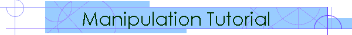

|

|
Manipulation TutorialNanoManipulator DP 100In order to successfully use the NanoManipulator, you must be familiar with the ThermoMicroscopes SPM you will be using, and be able to image the sample. You should also have some idea what settings would be used with the SPM tip you are using for imaging in contact and non-contact/oscillating mode. Connecting to your SPMFirst, load a sample and tip in your SPM. On the ThermoMicroscopes SPM controller computer, start SPMLab using the NM DP100 SPML 5.01 icon (We'll refer to this as the TM software). This version knows how to connect to the NanoManipulator. Put the tip into feedback and start scanning your sample, as described in ThermoMicroscopes manual and training procedures. Now you are ready to connect to the NanoManipulator. Now, on the NanoManipulator computer, start the NanoManipulator, either by double-clicking the desktop icon, or choosing Start .. Programs .. NanoManipulator .. NanoManipulator. If this is the first time you have run the NanoManipulator since rebooting your computer, the Phantom may not be centered on the surface when it is centered in its workspace. If you move the Phantom pen and can't reach the corners of the surface, move the Phantom through it's working volume, and then choose Tools .. Phantom and press the Reset Phantom button. To open a connection to an SPM, choose Open SPM Connection from the File menu. The Open SPM Connection dialog appears. Click the Choose... button and change the word "log" in the suggested filename to "tutorial", and click OK. Click Open, and the NanoManipulator will connect to your ThermoMicroscopes SPM. You will see the Image Params and Modify Params windows appear along the left edge, and the setpoint, P, I, and D gain parameters will change to match those set in the TM software. You will probably have to hit the Center button to get a view of the surface. SPM ControlImaging controls: There are two ways you can change the feedback parameters for imaging your sample. In the Tipcontrol menu, choose Image Params. This window provides entry boxes to immediately change the setpoint, P, I, and D gain parameters. These are directly linked to the TM software, so adjust them the same way you would in the TM software. If you click the Full params button, the window expands to show more options. The difference is that this view lets you switch between oscillating and contact mode imaging. To use oscillating mode, the drive frequency and other parameters should be set up in the TM software. You can also change the setpoint and PID in this panel - but they do not take affect until you click Accept. This allows you to switch from oscillating to contact (or vice versa) and set an appropriate setpoint all in one step. If you change your mind, click Revert and all parameters will be changed back to the current SPM settings. Modify controls: To set up parameters for a modification, choose Tipcontrol .. Modify Params. The NanoManipulator can automatically switch from oscillating mode imaging to contact mode modifications. This is most often what is done, because contact mode can provide a higher force for modification than oscillating mode, and provide lateral force measurements. To set up for a modification, first choose the feedback parameters to use. To avoid damaging your sample or tip unnecessarily, start by choosing the setpoint and the PID that you might use to image the sample. Then, if the sample is not modified, increase the setpoint for the next modification until the sample is modified. Remember to set the setpoint based on the free value of the T-B (top minus bottom) signal for contact mode modifications. You can determine this value by withdrawing the tip, turning off oscillating/non-contact mode, and observing the T-B signal in the oscilloscope window of the TM software. The style of modification affects how the SPM tip moves as the modification progresses. The sharp style is the simplest, in which the tip simply follows your movements while keeping in contact with the surface. Use sharp style for this tutorial, but check the modification parameters, style page for explanations of all available styles. The tool determines where the tip moves. Two tools are often used. With the freehand tool, the tip follows your hand position as you move, and you can feel the sample as it changes during your modification. With the line tool, you feel where you want the endpoints of a modification to be, then let the computer automatically make the modification. Check the modification parameters, tools page for explanations of all available tools. Here are the steps of a modification:
The Stripchart window pops up as soon as you start your first modification. By default, it graphs the height the tip is measuring and the lateral force. It can graph all the data that is being received from the SPM, including the tip's position on the surface, lateral force, and internal sensor. To export the modification data, go to File .. Save modification data. The text file produced can be easily opened in KaliedaGraph, Excel, or another graphing package to analyze the modification which was performed. But don't worry if you don't save a modification file - all the data you are taking is saved in the stream file. When you are done scanning and modifying your sample, go to File .. Close to disconnect from the SPM, or to File .. Exit to disconnect and exit. Your stream file will be saved to disk. Viewing stream filesThe NanoManipulator recognizes files that end in the ".nms" extension as NanoManipulator Stream files, and will open them if you double-click on them using the Windows Explorer. You can also start the NanoManipulator, and use the File .. Open Stream File menu item to open a stream file. Review the Visualization and Replay tutorial for more hints on viewing and analyzing your recorded experiments. Getting data for analysis:There are two types of data you might want to do more analysis on: the scan data and the modification data. The Stripchart lets you see roughly what happened during a modification, but other analysis packages can do more, like fit curves and make many changes to the appearance of the graph. We already described how to save the modification data above - just go to File .. Save modification data. The save dialog suggests a filename based on the time the modification started. To save scan data, choose File .. Save Plane Data. You can save scan data as a ThermoMicroscopes file and open it in the SPMLab software to do analysis on it. Presentation:The 3D view of the surface can be extremely effective for presentation of your data. To save a picture of the screen, go to File .. Save screen. The Show screen text toggle button removes text and other decorations from the screen, so you can add your own labels later with another program. An often-used technique is to freeze the replay before a modification, save a TIFF file, then pause again after the modification and one scan of the surface has been completed, and save another TIFF file, to show the results of a modification. TIFF files can be imported into MS Word and PowerPoint, and are not compressed, so they preserve all color data.
|